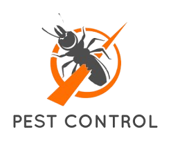
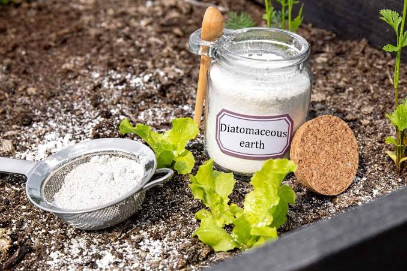
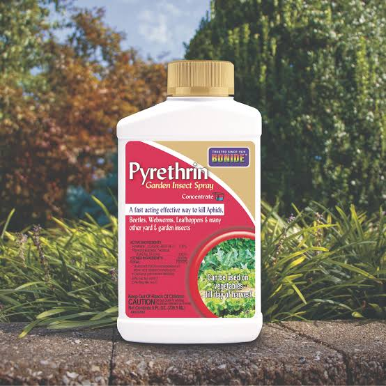
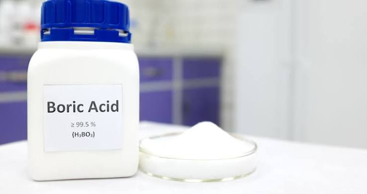

The problem with traditional pesticides is that the chemicals used can endanger the surrounding environment. This can cause serious damage to foliage and animal life in the environment leading to some having to leave their habitat as it is no longer safe. But know this when it comes to us, we can assure you that our methods of pest extermination won’t harm the environment in any manor. We are able to achieve this by using pesticides that can naturally be found in the environment. These pesticides are able to exterminate pests and deter rodents from entering your home, all while being as environmentally safe as possible.

Diatomaceous Earth is a white crumbly powder made up of tiny fossilized shells of water algae known as diatoms and can be found in dry lake beds. Diatomaceous Earth works by drying out insects and absorbing their oils and fats from the cuticle of their exoskeletons. Diatomaceous Earth if eaten or absorbed through skin contact to a human has minimal effects and can be excreted out of the body, however if Diatomaceous Earth is inhaled it can lead to development of increased lung cancer. That is why if in the event we must use this product we ask that you remain away from the area it has been applied to until we give you the green light.

Pyrethrin are pesticides naturally found in chrysanthemum flowers and is made up of 6 chemicals that are toxic toward insects. Pyrethrin works by overstimulating the insects nervous system after ingesting or touching it leading to their paralysis and afterward death. Pyrethrin although low in toxicity if exposed by inhaling can lead to irritation in the respiratory passages, coughing and even diarrhea. If absorbed by skin contact the Pyrethrin will be broken down and removed from the body with mild irritation in the area exposed area. A way to prevent the spread of the Pyrethrin is to have the area it's been used well ventilated.

Boric acid and sodium borate salts are pesticides that can be naturally found within the environment in soil, plants and water. Boric acid is good with dealing from spiders to fungi and mold. It works by either the pest eating it resulting in disturbances to their stomach and nervous to damaging their exterior of insects exoskeleton. Because Boric acid is able to deal with fungi and mold it is also able to do the same to plant life around it. Which is why we only intend to use it in controlled space in which we know there will be minimal to no spillage. If you have inhaled or ingested some Boric acid although low in toxicity will still result in symptoms like nausea, diarrhea and vomiting.
And with the use of these chemicals we are able to reduce the harm caused and prevent further damage to the environment. This is only the first step we intend on undertaking, moving forward we would like to implicate even more ways of being environmentally friendly when providing our services. However, we would like you to note that children are much more prone to being harmed by pesticides and could be harmed much easer compared to adults.